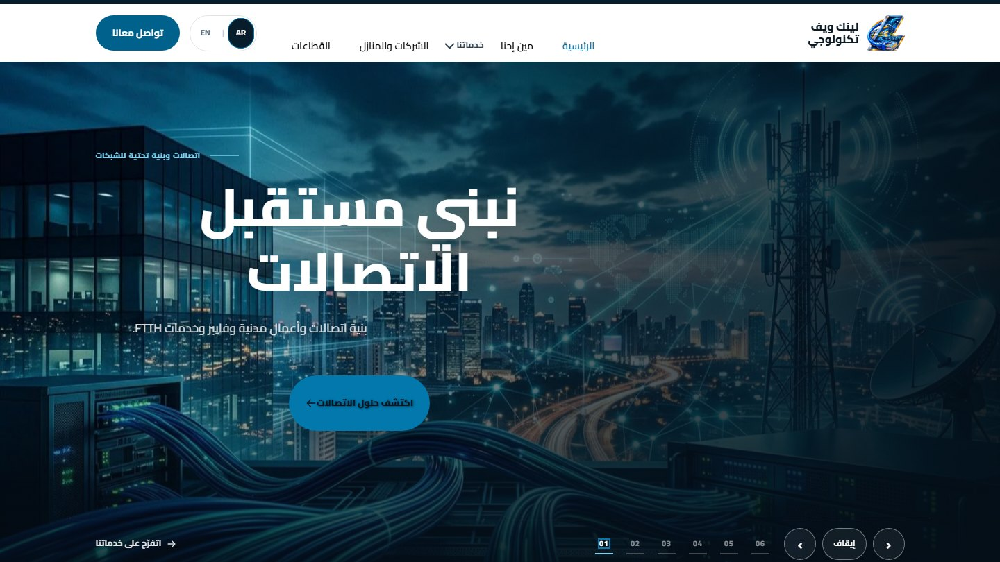
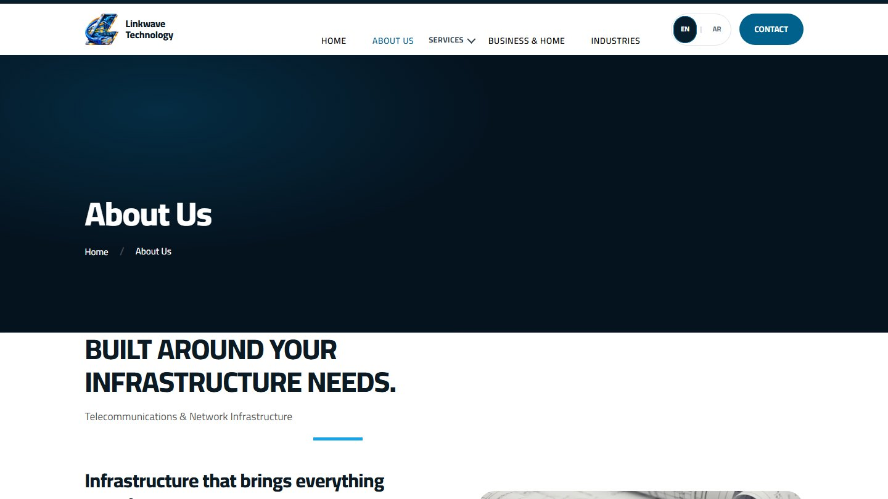
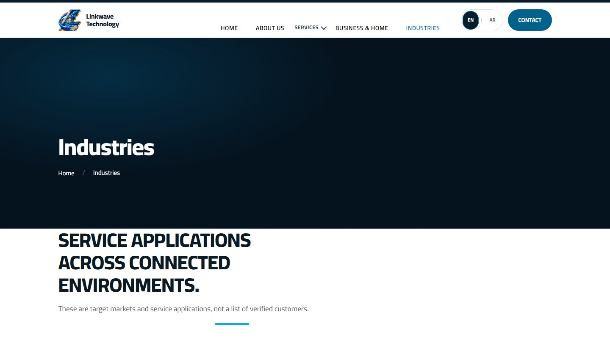

متاح للتجربة
Linkwave.tech
موقع شركة Linkwave Technology لبنية الاتصالات والشبكات — نسخة عربية وإنجليزية تعرض الخدمات والقطاعات.
موقع شركة Linkwave Technology لبنية الاتصالات والشبكات — نسخة عربية وإنجليزية تعرض الخدمات والقطاعات.
صفحات عامة من الموقع بالعربية والإنجليزية — استخدم الأسهم للتنقل وزر «تكبير» للعرض الكامل.




استخدم الأسهم للتنقل، وزر «تكبير» لعرض الصورة كاملة.
موقع شركة Linkwave Technology لبنية الاتصالات والشبكات — نسخة عربية وإنجليزية تعرض الخدمات والقطاعات.
متاح للتجربة. مشروع متاح للاستكشاف عبر الرابط العام.
جزء من مساحة AiFRAHAT للتعلّم والتجريب والربط بين المعرفة البشرية والتقنية.
الاعتمادات: Screenshots of the official website. Published footer credit: “Template by AiFrahat.com”.